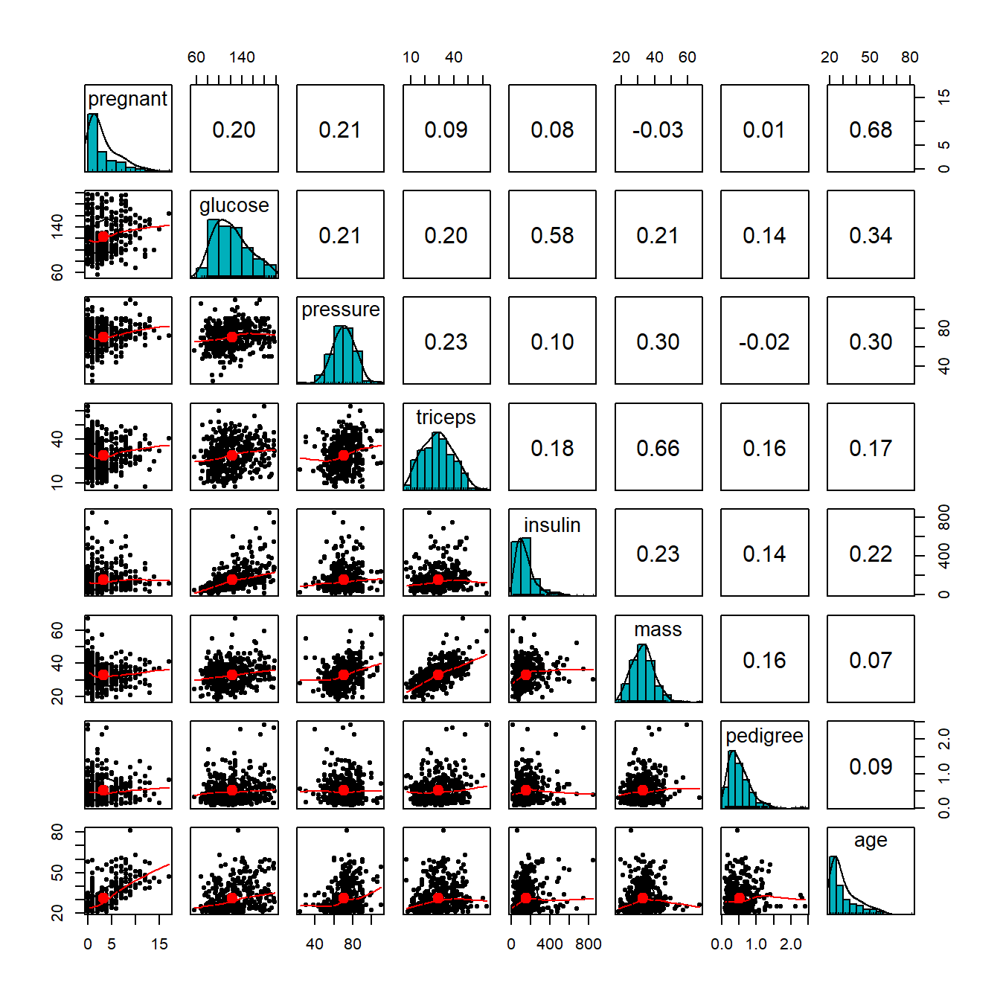
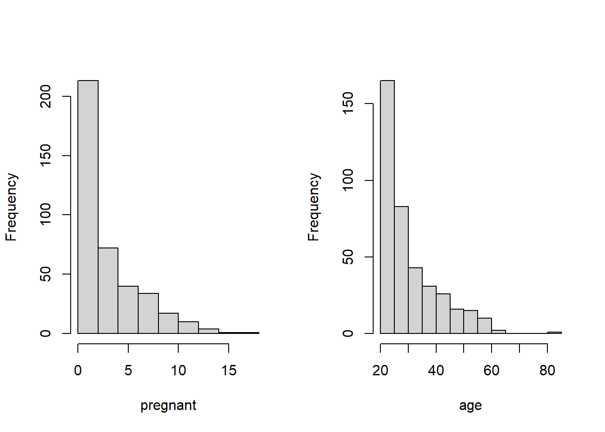

Topic 10 Multiple Logistic Regression Model
The general multivariable linear regression model is given below.
\[ y = \beta_0 + \beta_1x_1 + \beta_2 x_2 + \cdots + \beta_kx_k + \epsilon, \]
where \(y\) is the response variable that is assumed to be a random variable and \(\epsilon \to N(0, \sigma^2)\). This also implies that
\[ E[y] = \beta_0 + \beta_1x_1 + \beta_2 x_2 + \cdots + \beta_kx_k \]
For a population with binary data, the underlying random variable can only take exactly two values, say \(Y=1\) or \(Y=0\), and \(P(Y=1) = p\), then \(E[Y] = 1\times p + 0\times (1-p) = p.\)
That is, the success probability is the expected value of the binary random variable. If we mimic the formulation of the linear regression model by setting
The simple linear regression model (also called the log-odds regression model) is also formulated with the mean response \(E[Y]\) \[ \frac{E[Y]}{1-E[Y]} = \beta_0 + \beta_1x. \]
Let \(g(t) = t/(1-t)\) (also called logit function), the simple logistic regression is re-expressed as \(g(E[Y]) = \beta_0 + \beta_1x\).
10.1 Multiple Logistic Regression Model
Let \(Y\) be the binary response variable and \(\{x_1, x_2, \cdots, x_n \}\) be the set of predictor variables. If \(Y\) takes on either 1 or 0, the multiple logistic regression model is then defined as
\[ \frac{E[Y]}{1-E[Y]} = \beta_0 + \beta_1x_1 + \beta_2 x_2 + \cdots + \beta_kx_k \]
The success probability function
\[ p(x_1, x_2, \cdots, x_k)=P(Y=1|x_1, x_2, \cdots, x_k) =\frac{\exp(\beta_0 + \beta_1x_1 + \beta_2 x_2 + \cdots + \beta_kx_k)}{1+\exp(\beta_0 + \beta_1x_1 + \beta_2 x_2 + \cdots + \beta_kx_k)} \]
If \(Y\) takes on character values, R uses chooses the alphabetically higher value to model the above probability. For example, if \(Y\) = “disease” or “no.disease”, by default, the logistic regression will be defined as
\[ p(x_1, x_2, \cdots, x_k)=P(Y="no.disease"|x_1, x_2, \cdots, x_k) =\frac{\exp(\beta_0 + \beta_1x_1 + \beta_2 x_2 + \cdots + \beta_kx_k)}{1+\exp(\beta_0 + \beta_1x_1 + \beta_2 x_2 + \cdots + \beta_kx_k)} \] Of cause, you can also redefine the factor level of the response variable to model the probability of the desired category.
10.1.1 Data Requirements: Sources, Layout, and Cleansing
The logistic regression models we are discussing require an I.I.D. sample collected from a cross-sectional study design. Auto-correlation between observations is not allowed. For longitudinal data that involves auto-correlation, different models can be used to handle the correlation between observations taken from the same subject in the study.
The general data layout for fitting a logistic regression in R has the following form.
| Y | X1 | X2 | Xk | |
|---|---|---|---|---|
| Y1 | X11 | X21 | … | Xk1 |
| Y2 | X12 | X22 | … | Xk2 |
| … | … | … | … | … |
| Yn | X1n | X2n | … | Xkn |
10.1.2 Issues of Predictor Variables and Variable Inspection-Transformation
All models have some explicit and implicit assumptions about the predictor variables and structure of the models. Unlike multiple linear regression models in which the diagnostic residual plots reveal some special patterns of potential violations of the model assumptions, in logistic regression modeling, we don’t have many diagnostic tools to use. Some pre-processing procedures should be performed on predictor variables before a logistic regression model is fit to the data.
The variable inspection-transformation is an iterative process, some of the following potential issues of predictor variables may be considered in the inspection-transformation-inspection workflow.
Variable Types: Predictor variables could be numeric, categorical, or a mixture of numeric and categorical.
Collinearity: Predictor variables are assumed to be non-linearly correlated since the multicollinearity causes unstable estimates of the regression coefficients, hence, fails to obtain a valid model. Remedy for collinearity
Remove some of the highly correlated independent variables - Variable selection.
Perform an analysis designed for highly correlated variables such as principal components analysis or partial least squares regression - variable extraction.
Variable centralization.
Non-probabilistic variable selection - Regularization.
Dummy Variables: If categorical predictor variables were numerically coded, we have to turn these numerically coded variables into factor variables. For example, the status of a disease could be “severe”, “mild”, and “disease-free”, if a numerical coding: 2 = “severe”, 1 = “mild” and 0 = “disease-free”, then you need to R function factor() to convert the numerically coded disease status to a factor variable.
“Fake Variable”: The observation ID is NOT a variable, you should never include the observation ID in any of your regression models.
Sparse Category Variables: Group the categories in a meaningful way if necessary. For example, Assume that you have a data set of information about cars of different models from various manufacturers. If you want to build regression on a data set with a relatively small sample size, the use of the car-model as a categorical variable is not appropriate since too many different car models will result in too many dummy variables. From a mathematical point of view, the number of parameters should be less than the number of data points. However, from the statistical point of view, the desired sample size is 15 times the number of parameters to ensure stable estimates of model parameters.
Variable transformation: - In logistic regression models, the response variable has already been transformed in the form of log odds of “success”. The predictor variables could be transformed in different ways for different purposes.
Association Analysis - a transformation of predictor variables makes the interpretation of the coefficient much more difficult.
Predictive Analysis - transforming all numerical variables to the same scale may improve the performance of predictive models. One of the benefits of standardizing predictor variables is to make variable selection (model regularization) straightforward and interpretable.
Variable Discretization - several methods can be used for the discretization: (1) empirical approaches include equally spaced and equal frequency, (2) model-assisted approaches include decision tree and k-mean. Discretization is commonly used for different purposes.
Model interpretability and understandability - it is easier to understand continuous data (such as age) when divided and stored into meaningful categories or groups. It is commonly used in association analysis.
Fixing the potential imbalance issues that could potentially lead to an unstable estimate of the coefficients.
10.1.3 Estimation and Interpretation of Regression Coefficients
As mentioned in the simple logistic regression model, regression coefficients are estimated by using the maximum likelihood approach.
Let \(\{(y_1, x_{11}, x_{21}, \cdots, x_{k1}), (y_2, x_{12}, x_{22}, \cdots, x_{k2}), \cdots, (y_n, x_{1n}, x_{2n}, \cdots, x_{kn})\}\) be a random sample taken from a binary population associated with \(Y\). \(x\) is a nonrandom predictor variable associated with \(Y\). The logistic model is defined to be
\[ p(x) = \frac{e^{\beta_0 + \beta_1 x_1 +\cdots + \beta_kx_k}}{1 + e^{\beta_0 + \beta_1 x_1 + \cdots + \beta_kx_k}}. \] The likelihood function of \((\beta_0, \beta_1, \cdots, \cdots, \beta_k)\) is given by
\[ L(\beta_0, \beta_1,\cdots, \beta_k) = \prod_{i=1}^n \left[\frac{e^{\beta_0 + \beta_1 x_{i1}+\cdots+\beta_kx_{ik}}}{1 + e^{\beta_0 + \beta_1 x_{i1}+\cdots+\beta_kx_{ik}}}\right]^{y_i}\times \left[\frac{1}{1 + e^{\beta_0 + \beta_1 x_{i1}+\cdots+\beta_kx_{ik}}} \right]^{1-y_i} \]
The maximum likelihood estimate (MLE) of \(\beta_0, \beta_1, \cdots, \beta_k\), denoted by \(\hat{\beta}_0,\hat{\beta}_1, \cdots, \hat{\beta}_k\), maximizes the above likelihood. The R build-in function glm() uses the MLE method to estimate parameters and reports related to MLE-based statistics.
The coefficients are interpreted similarly as used in the simple logistic regression model. To interpret \(\beta_j\) in the multiple logistic regression model,
\[ \log\left(\frac{P[Y=1|\cdots,x_j,\cdots]}{1-P[Y=1|\cdots,x_j,\cdots]}\right) = \beta_0 + \beta_1x_1 + \cdots + \beta_{j-1}x_{j-1}+ \beta_jx_j + \beta_{j+1} + \cdots+\beta_kx_k \] If we fix the values of all \(X_i\) except for increasing \(x_j\) by one unit, then
\[ \log\left(\frac{P[Y=1|\cdots,(x_j+1),\cdots]}{1-P[Y=1|\cdots,(x_j+1),\cdots]}\right) = \beta_0 + \beta_1x_1 + \cdots + \beta_{j-1}x_{j-1}+ \beta_j(x_j+1) + \beta_{j+1}x_{j+1} + \cdots+\beta_kx_k \] Then
\[ \beta_j = \log\left(\frac{P[Y=1|\cdots,(x_j+1),\cdots]}{1-P[Y=1|\cdots,(x_j+1),\cdots]}\right) - \log\left(\frac{P[Y=1|\cdots,x_j,\cdots]}{1-P[Y=1|\cdots,x_j,\cdots]}\right) =\log \left(\frac{\frac{P[Y=1|\cdots,(x_j+1),\cdots]}{1-P[Y=1|\cdots,(x_j+1),\cdots]}}{\frac{P[Y=1|\cdots,x_j,\cdots]}{1-P[Y=1|\cdots,x_j,\cdots]}}\right) \]
Therefore, \(\beta_j\) (for \(j=1, 2, \cdots, k\)) is the log odds ratio as explained in the simple logistic regression model.
If \(\beta_j = 0\), then \(x_j\) is insignificant meaning that the odds of “success” in a subset of subjects with predictor values \(\{x_1, \cdots, x_{j-1}, x_{j+1}, x_{j+1}, \cdots, x_k \}\) is equal to the odds of “success” in other subsets with predictor values \(\{x_1, \cdots, x_{j-1}, x_{j}, x_{j+1}, \cdots, x_k \}\).
10.2 Building Blocks for Predictive Performance
Prediction in the logistic regression is not straightforward. The logistic regression function
\[ p(x) = \frac{e^{\beta_0 + \beta_1 x_1 +\cdots + \beta_kx_k}}{1 + e^{\beta_0 + \beta_1 x_1 + \cdots + \beta_kx_k}}. \]
predicts the probability of “success” but not the status of “success”. In order to predict the value of \(Y\), we still need to have a cut-off probability to define the predicted “success” and “failure”. How to find the optimal cut-off probability will be addressed later module.
Next, we assume there is a cut-off probability for predicting the original value of the response variable. Most software programs as R and SAS use 0.5 as the cut-off for predicting \(Y\).
10.2.1 Understanding the Performance of Medical Diagnostics
In this section, we define some performance metrics of the logistic regression as a predictive model based on the predictive error. For ease of illustration, we consider a simple model using a diagnostic test result (X = T+ or T-) to predict a disease (Y = D+ or D-) to define these performance metrics where
T+ = positive test result: numerical coding 1
T- = negative test result: numerical coding 0
D+ = diseased: numerical coding 1
D- = disease-free: numerical coding 0
The following metrics measure the predictive performance of the logistic regression model. The first two measures reflect the correct decision of the model and the last two error rates of the logistic regression model.
Positive Predictive Value: P(Y = D+ | X = T+)
\(PPV =P(Y=1|X=1)= \frac{e^{\beta_0+\beta_1}}{1+e^{\beta_0+\beta_1}}\)
Negative Predictive Value: P(Y = D- | X = T-)
\(NPV=P(Y=1|X=0)= \frac{e^{\beta_0}}{1+e^{\beta_0}}\)
False Positive Predictive Rate: P(Y = D- | X = T+)
\(FPPV=P(Y=0|X=1)= \frac{1}{1+e^{\beta_0+\beta_1}}\)
False Positive Predictive Rate: P(Y = D+ | X = T-)
\(FNPV=P(Y=0|X=0)= \frac{1}{1+e^{\beta_0}}\)
The above four conditional probabilities can also be estimated by calculating the corresponding relative frequencies from the following two-way contingency table - also called confusion matrix. For convenience, we call the above four metrics prediction performance metrics.
D1 = c("n11", "n12")
D0 = c("n21", "n22")
M=as.data.frame(rbind(D1, D0))
names(M)=c("T+", "T-")
row.names(M) = c("D+", "D-")
kable(M)| T+ | T- | |
|---|---|---|
| D+ | n11 | n12 |
| D- | n21 | n22 |
The above four metrics are used by clinical diagnosis after the test was approved by the FDA since the diagnostic decision is based on the test result.
10.2.2 Performance Metrics Used in Clinical Trials:
Now, let’s consider the case that a manufacturer conducting a clinical phase II trial and submitting the results for FDA approval. The FDA uses the following metrics in the approval process.
Sensitivity: P( T+ | D+)
Specificity: P( T- | D-)
False Negative Rate: P( T- | D+)
False Positive Rate: P( T+ | D-)
The above metrics are well-defined since the disease status of subjects is known in the clinical trial. The estimated values of these metrics can be found in the clinical data. For convenience, we call the above four metrics Validation Performance Metrics.
10.2.3 Remarks
Here are several remarks on the above two sets of performance metrics.
The prediction performance metrics are dependent on the choice of the cut-off “success” probability. They can be estimated from a fitted logistic regression model.
The validation performance metrics are defined based on the data with known disease status. A proposed diagnostic test is good if both sensitivity and specificity are high.
Thinking about the logistic regression model you developed as “a diagnostic test” (since it can predict the status of a disease), which sets of metrics you should use to show the goodness of your model? The answer is the set of validation performance metrics.
Sensitivity and Specificity are the basic building blocks used to define various performance metrics to assess the goodness of the predictive model using the testing data with known response values. This will be one of the major topics in the next module.
10.3 Case Study
In this case study, we still use the diabetes data that was used in the last module.
10.4 Data and Variable Descriptions
There are 9 variables in the data set.
pregnant: Number of times pregnant
glucose: Plasma glucose concentration (glucose tolerance test)
pressure: Diastolic blood pressure (mm Hg)
triceps: Triceps skin fold thickness (mm)
insulin: 2-Hour serum insulin (mu U/ml)
mass: Body mass index (weight in kg/(height in m)^2)
pedigree: Diabetes pedigree function
age: Age (years)
diabetes: Class variable (test for diabetes)
I load the data from R library{mlbench} in the following code. For convenience, I delete all records with missing values and keep only the records with complete records in this case study. The final analytic data set has 392 records. This
library(mlbench)
data(PimaIndiansDiabetes2) # load the data to R work-space
diabetes.0 = PimaIndiansDiabetes2 # make a copy of the data for data cleansing
diabetes = na.omit(diabetes.0) # Delete all records with missing components
#head(diabetes)10.4.1 Research Question
The objective of this case study is to identify the risk factors for diabetes.
10.4.2 Exploratory Analysis
We first make the following pairwise scatter plots to inspect the potential issues with predictor variables.
##
## 载入程辑包：'psych'## The following objects are masked from 'package:scales':
##
## alpha, rescalepairs.panels(diabetes[,-9],
method = "pearson", # correlation method
hist.col = "#00AFBB",
density = TRUE, # show density plots
ellipses = TRUE # show correlation ellipses
)
From the correlation matrix plot, we can see several patterns in the predictor variables.
- All predictor variables are unimodal. But pregnant and age are significantly skewed. We next take a close look at the frequency distribution of these two variables.
par(mfrow=c(1,2))
hist(diabetes$pregnant, xlab="pregnant", main = "")
hist(diabetes$age, xlab = "age", main = "")
Based on the above histogram, we discretize pregnant and age in the following.
preg = diabetes$pregnant
grp.preg = preg
grp.preg[preg %in% c(4:6)] = "4-6"
grp.preg[preg %in% c(7:9)] = "7-9"
grp.preg[preg %in% c(10:17)] = "10+"
##
age = diabetes$age
##
grp.age = age
grp.age[age %in% c(21:24)] = "21-25"
grp.age[age %in% c(25:30)] = "25-30"
grp.age[age %in% c(31:40)] = "31-40"
grp.age[age %in% c(41:50)] = "41-50"
grp.age[age %in% c(51:99)] = "50 +"
## added to the diabetes data set
diabetes$grp.age = grp.age
diabetes$grp.preg = grp.pregA moderate correlation is observed in several pairs of variables: age v.s. pregnant, glucose v.s. insulin, and triceps v.s. mass. We will not drop any of these variables for the moment but will perform an automatic variable selection process to remove potential redundant variables since a few of them will be forced to be included in the final model.
Since our goal is association analysis, we will not perform variable transformations for the time being.
It is very common in real-world applications that some of the practically important variables are always included in the final model regardless of their statistical significance. In the diabetes study, three insulin, MBI, and pedigree are considered significant risk factors. We will include these three variables in the final model. This means the smallest model must have these three variables.
10.4.3 Building the Multiple Logistic Regression Model
Based on the above exploratory analysis, we first build the full model and the smallest model.
full.model = glm(diabetes ~grp.preg+glucose+pressure+triceps+insulin+mass+pedigree+grp.age,
family = binomial(link = "logit"), # logit(p) = log(p/(1-p))!
data = diabetes)
kable(summary(full.model)$coef,
caption="Summary of inferential statistics of the full model")| Estimate | Std. Error | z value | Pr(>|z|) | |
|---|---|---|---|---|
| (Intercept) | -8.7503322 | 1.3331796 | -6.5635058 | 0.0000000 |
| grp.preg1 | -0.3977538 | 0.5093087 | -0.7809679 | 0.4348214 |
| grp.preg10+ | 0.3935217 | 0.7902561 | 0.4979673 | 0.6185071 |
| grp.preg2 | -0.2958769 | 0.5571478 | -0.5310564 | 0.5953797 |
| grp.preg3 | 0.3842810 | 0.5700718 | 0.6740923 | 0.5002526 |
| grp.preg4-6 | -0.9140847 | 0.5668123 | -1.6126761 | 0.1068149 |
| grp.preg7-9 | -0.2284477 | 0.6514907 | -0.3506538 | 0.7258481 |
| glucose | 0.0382521 | 0.0060502 | 6.3224381 | 0.0000000 |
| pressure | -0.0072937 | 0.0121999 | -0.5978495 | 0.5499403 |
| triceps | 0.0107744 | 0.0180674 | 0.5963470 | 0.5509435 |
| insulin | -0.0002279 | 0.0013854 | -0.1645109 | 0.8693290 |
| mass | 0.0583354 | 0.0284914 | 2.0474744 | 0.0406115 |
| pedigree | 1.0412541 | 0.4461747 | 2.3337362 | 0.0196095 |
| grp.age25-30 | 1.0829606 | 0.4193260 | 2.5826224 | 0.0098053 |
| grp.age31-40 | 1.5405843 | 0.4909205 | 3.1381545 | 0.0017002 |
| grp.age41-50 | 2.2601500 | 0.6144945 | 3.6780639 | 0.0002350 |
| grp.age50 + | 2.0014940 | 0.7174832 | 2.7896040 | 0.0052773 |
reduced.model = glm(diabetes ~ insulin + mass + pedigree,
family = binomial(link = "logit"), # logit(p) = log(p/(1-p))!
data = diabetes)
kable(summary(reduced.model)$coef,
caption="Summary of inferential statistics of the reduced model")| Estimate | Std. Error | z value | Pr(>|z|) | |
|---|---|---|---|---|
| (Intercept) | -4.3288188 | 0.6463940 | -6.696874 | 0.0000000 |
| insulin | 0.0047984 | 0.0010835 | 4.428585 | 0.0000095 |
| mass | 0.0673268 | 0.0178494 | 3.771943 | 0.0001620 |
| pedigree | 1.0779952 | 0.3601870 | 2.992876 | 0.0027636 |
## automatic variable selection
library(MASS)
final.model.forward = stepAIC(reduced.model,
scope = list(lower=formula(reduced.model),upper=formula(full.model)),
direction = "forward", # forward selection
trace = 0 # do not show the details
)
kable(summary(final.model.forward)$coef,
caption="Summary of inferential statistics of the final model")| Estimate | Std. Error | z value | Pr(>|z|) | |
|---|---|---|---|---|
| (Intercept) | -9.5340546 | 1.0941037 | -8.7140321 | 0.0000000 |
| insulin | -0.0005617 | 0.0013568 | -0.4140043 | 0.6788710 |
| mass | 0.0703082 | 0.0212351 | 3.3109430 | 0.0009298 |
| pedigree | 1.0567094 | 0.4305469 | 2.4543423 | 0.0141143 |
| glucose | 0.0387018 | 0.0058814 | 6.5804090 | 0.0000000 |
| grp.age25-30 | 1.0012238 | 0.3918271 | 2.5552695 | 0.0106106 |
| grp.age31-40 | 1.3679308 | 0.4163693 | 3.2853782 | 0.0010185 |
| grp.age41-50 | 2.1962925 | 0.4712387 | 4.6606796 | 0.0000032 |
| grp.age50 + | 1.9277491 | 0.5802575 | 3.3222305 | 0.0008930 |
## Other global goodness-of-fit
global.measure=function(s.logit){
dev.resid = s.logit$deviance
dev.0.resid = s.logit$null.deviance
aic = s.logit$aic
goodness = cbind(Deviance.residual =dev.resid, Null.Deviance.Residual = dev.0.resid,
AIC = aic)
goodness
}
goodness=rbind(full.model = global.measure(full.model),
reduced.model=global.measure(reduced.model),
final.model=global.measure(final.model.forward))
row.names(goodness) = c("full.model", "reduced.model", "final.model")
kable(goodness, caption ="Comparison of global goodness-of-fit statistics")| Deviance.residual | Null.Deviance.Residual | AIC | |
|---|---|---|---|
| full.model | 324.9106 | 498.0978 | 358.9106 |
| reduced.model | 434.7276 | 498.0978 | 442.7276 |
| final.model | 334.2005 | 498.0978 | 352.2005 |
10.4.4 Final Model
In the exploratory analysis, we observed three pairs of variables are linearly correlated. After automatic variable selection, triceps and age were dropped out from the final model. Both insulin and glucose are still in the model. Although insulin is statistically insignificant, we still include it in the model since it is clinically important.
# Odds ratio
model.coef.stats = summary(final.model.forward)$coef
odds.ratio = exp(coef(final.model.forward))
out.stats = cbind(model.coef.stats, odds.ratio = odds.ratio)
kable(out.stats,caption = "Summary Stats with Odds Ratios")| Estimate | Std. Error | z value | Pr(>|z|) | odds.ratio | |
|---|---|---|---|---|---|
| (Intercept) | -9.5340546 | 1.0941037 | -8.7140321 | 0.0000000 | 0.0000723 |
| insulin | -0.0005617 | 0.0013568 | -0.4140043 | 0.6788710 | 0.9994384 |
| mass | 0.0703082 | 0.0212351 | 3.3109430 | 0.0009298 | 1.0728388 |
| pedigree | 1.0567094 | 0.4305469 | 2.4543423 | 0.0141143 | 2.8768887 |
| glucose | 0.0387018 | 0.0058814 | 6.5804090 | 0.0000000 | 1.0394605 |
| grp.age25-30 | 1.0012238 | 0.3918271 | 2.5552695 | 0.0106106 | 2.7216105 |
| grp.age31-40 | 1.3679308 | 0.4163693 | 3.2853782 | 0.0010185 | 3.9272159 |
| grp.age41-50 | 2.1962925 | 0.4712387 | 4.6606796 | 0.0000032 | 8.9916151 |
| grp.age50 + | 1.9277491 | 0.5802575 | 3.3222305 | 0.0008930 | 6.8740202 |
The interpretation of the odds ratios is similar to the case of simple logistic regression. The group-age variable grp.age has five categories. The baseline category is aged 21-24. We can see from the above table inferential table that the odds of getting diabetes increase as age increases. For example, the odds ratio associated with the age group 31-39 is 3.927 meaning that, given the same level of insulin, BMI, pedigree, and glucose, the odds of being diabetic in the age group of 31-40 is almost 4 times of that in the baseline group aged 21-24. But the same ratio becomes nine times when comparing the age group 41-50 with the baseline group of age 21-24.
10.4.5 Summary and Conclusion
The case study focused on the association analysis between a set of potential risk factors for diabetes. The initial data set has 8 numerical and categorical variables.
After exploratory analysis, we decide to re-group two sparse discrete variables pregnant and age, and then define dummy variables for the associated variables. These new group variables were used in the model search process.
Since insulin, BMI, and pedigree are considered to be major contributors to the development of diabetes, we include three risk factors in the final model regardless of the statistical significance.
After automatic variable selection, we obtain the final model with 4 factors, BMI, pedigree, glucose, age (with 4 dummy variables), and insulin (that is not statistically significant but clinically important).
Diabetes prediction or classification is another important practical issue. We will address this practical question in the next module.
10.5 Analysis Assignment
This assignment focuses on multiple logistic regression modeling using the same data set you used in the previous week. To be more specific, the data set has to meet the following requirements:
The response variable must be binary. It could be made by dichotomizing a numerical variable or regrouping a categorical variable.
At least two continuous predictor variables
At least two categorical predictor variables
The sample size should be at least 15 times the total number of numerical variables and dummy variables.
Components of the analysis report
The report should contain the same components as I included in the case study in this week’s class note. Please keep in mind that the interpretation of results is VERY important.
Description of your data set and variables
Research questions
Data management and variable inspection
variable creation based on existing variables
variable transformation
variable discretization
handling sparse categorical variables
model building process
candidate models
manual variable selection
automatic variable selection
final model identification
summarize the inferential statistics in the final model.
Conclusion and discussion
Remarks:
This assignment focuses only on the association analysis.
Convert the regression coefficients in the final to odds ratio and then provide practical interpretation.
The global goodness-of-fit measures (deviance, AIC, etc) in all candidate models should be reported during model selection.